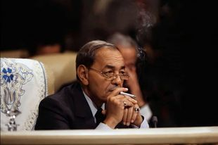

LE ROI HASSAN II

Né à Rabat le 9 juillet 1929, Moulay Hassan reçoit une éducation orientale et européenne, puis obtient une licence et un diplôme des hautes études de droit à la faculté de Bordeaux. Associé dès son plus jeune âge à la cause du nationalisme marocain, il partage avec son père les vicissitudes de son engagement politique et l'énorme prestige populaire conquis dans cette épreuve. Désigné en 1957, puis investi officiellement prince héritier, il exerce, jusqu'à la mort subite de Mohammed V en février 1961, d'importantes responsabilités politiques et militaires qui révèlent de réelles aptitudes à gouverner. Solennellement intronisé avec l'accord des Chorfas alaouites, des oulémas et des autorités du pays, il inscrit son action politique dans la trace des principes et des objectifs définis par son père. Il fait adopter en 1962 une Constitution qui codifie l'autorité religieuse du roi et la suprématie institutionnelle de la monarchie au sein d'un cadre parlementaire et d'un multipartisme dont l'expérience tourne court en 1965. Instaurant l'état d'exception, Hassan II concentre tous les pouvoirs autour du palais et d'un réseau d'élites administratives tissé sous l'égide du ministre de l'Intérieur. L'absolutisme royal devient la trame d'un système qui s'accommode d'une corruption intensive, d'une répression sélective et d'un enrichissement outrancier. La nouvelle Constitution de 1970 pérennise un régime autocratique et profondément inégalitaire.
Stephen Smith, «Le dernier monarque de droit divin : Hassan II a régné de façon absolue», Libération (France), 26 juillet 1999,
«Deux générations de Marocains n'ont connu que lui, un demi-dieu, maître du temps dynastique. Pendant 38 ans, son règne a été celui de l'arbitraire et du secret, à l'abri des murailles ceignant ses palais. Dans son pays, il n'y a pas de citoyens, seulement des "sujets" sur lesquels il avait droit de vie et de mort. Personne ne pouvait crier "Vive la République" sans risquer la prison pour avoir porté atteinte aux "institutions sacrées": l'Islam, le Roi et la Patrie. Le multipartisme, les constitutions successives et même, il y a 17 mois, "l'alternance" au gouvernement, n'ont été octroyés que de plus ou moins bonne grâce. Car Hassan II a été le dernier monarque régnant de droit divin, absolu. Il a pu l'être pour des raisons historiques, mais aussi parce qu'il a su composer avec un siècle épris de laïcité et de démocratie...»
Hassan Ziady, «La chagrin et la fierté», Jeune Afrique (France), 30 juillet au 9 août 1999
«...Ce dimanche 25 juillet fut l'apothéose de l'incroyable tension qui montait d'heure en heure depuis l'annonce, le vendredi précédent en milieu d'après-midi, du véritable drame subi par les Marocains. Amour du disparu, inquiétudes quant aux contours d'un avenir déjà incertain, peur d'éventuelles tentatives de déstabilisation, interrogations sur les capacités à manoeuvrer du nouveau roi : de ces ingrédients, parmi d'autres, est née une sorte d'alchimie qui explique quelque peu ces heures surréalistes vécues au royaume et cette amnésie collective qui a frappé les Marocains. Comme par enchantement, ils ont oublié les années de plomb, les disparus et les victimes de la répression, la misère insupportable dans un pays à la traîne en termes de développement économique et social.»
Maurice Druon, «Les funérailles de Hassan II : Que Dieu le glorifie !», Le Figaro (France), 26 juillet 1999
«...Il fut, au cours de son long règne, l'objet de toutes les critiques, de toutes les réticences, de toutes les perfidies. Non pas de la part d'une très vaste majorité de son peuple, qui se reconnaissait en lui, mais de ceux qui, hors du Maroc, et dans une certaine presse, française en particulier, haïssent la grandeur. A présent, je ne serais pas surpris que ses adversaires eux-mêmes s'accordent à lui décerner des louanges, sur le ton : «Il faut être juste et reconnaître...» Il est bien temps. La vérité est que, pour les Marocains, que le deuil écrase, Hassan II restera comme l'un de leurs plus grands monarques, dans la suite de Moulay Idriss Ier, le fondateur, et à l'égal de Moulay Ismaïl, de Moulay Hassan Ier, son aïeul, et de son père, Mohammed V. Pour le monde il apparaîtra comme l'un des plus remarquables chefs d'Etat du siècle. Il avait le courage ; il avait la lucidité ; il avait la prévision, et une manière de génie dans l'imagination diplomatique.»